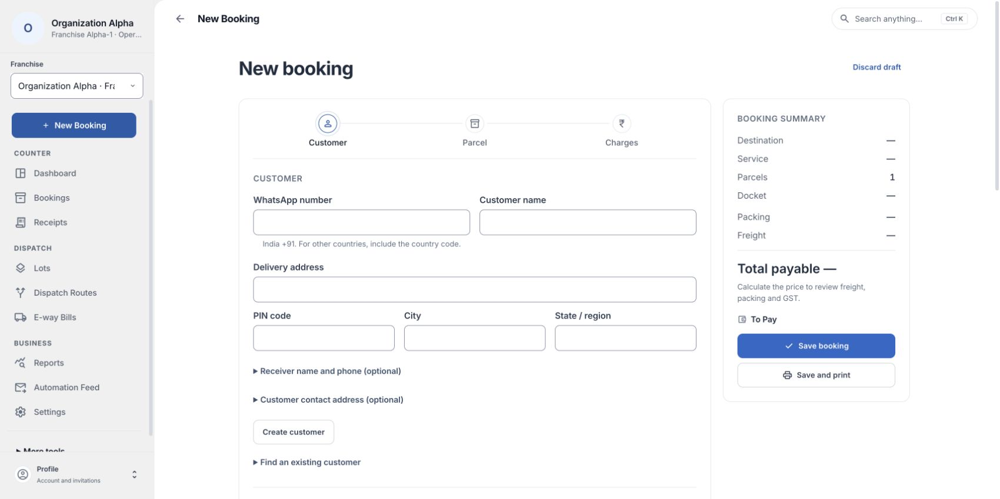
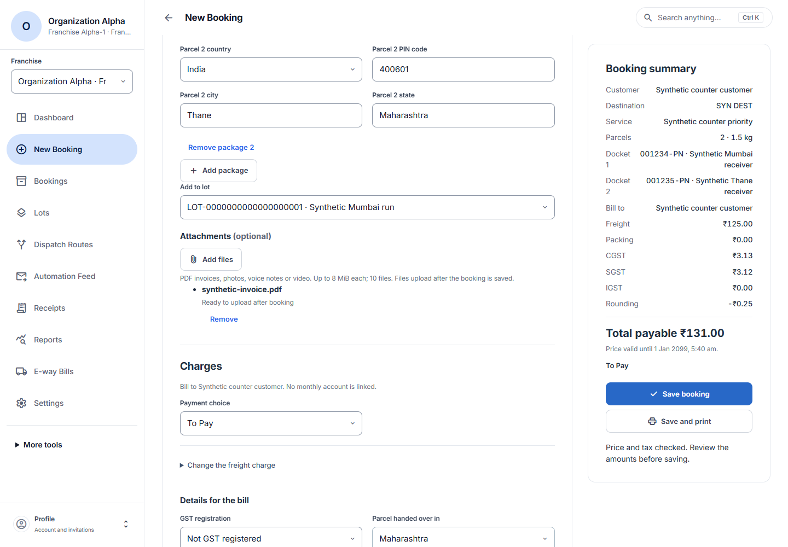
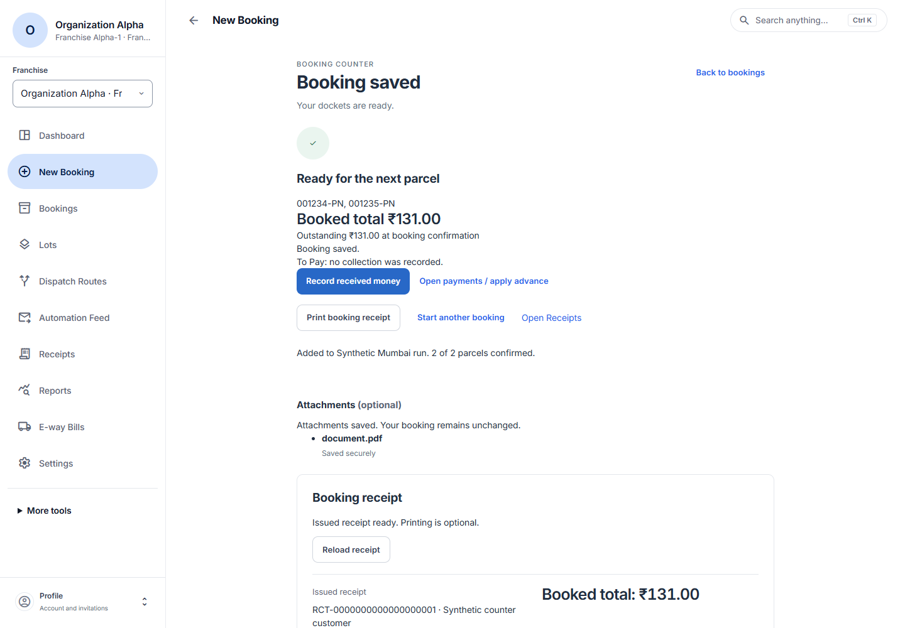

Create a booking
Choose the branch taking the booking and open New booking. Customer, Parcel and Charges are on one page. Use the section names to jump between them. The booking summary sits beside the form on a wide screen and below it on a phone.

Choose the customer
For a returning customer, expand Find an existing customer and enter at least three letters of their name or their full phone number. Check the customer’s name and phone before selecting a match. If you need to add someone, select New customer or the Add option under the search.
For a new customer, enter the WhatsApp number first, then the customer name. India +91 is added to local numbers; include a country code for other countries. The customer’s shop or contact address is optional. Select Create customer and wait for Customer details confirmed.
To correct a saved customer, edit the visible fields and choose Save customer changes. If another staff member has updated the record, refresh it and check the latest details before using them.
Enter each parcel
Enter the first delivery address, PIN code, city and state below the customer name. Receiver name and phone are optional. Enter the docket beside Destination, weight beside Service, and declared goods value beside Add to lot.
Select the destination and service from the branch’s rates. All parcels in one booking use this destination and service. For two different destinations, make separate bookings.
- Docket number
- Copy the number from the parcel’s paper docket, including any leading zeroes. Each parcel needs its own unused number. Use up to 32 letters, numbers and hyphens.
- Weight (kg)
- Enter the packed weight in kilograms. For example, enter 0.750 for 750 grams.
- Contents type and description
- Choose the kind of goods and write a short description. For liquids and semi-liquids, also enter the quantity in litres.
- Declared goods value (₹)
- Enter the value of the goods in this parcel if supplied. Leave it blank when unknown. The value of the goods is separate from the freight you charge.
- Receiver
- Enter the complete delivery address. The recipient’s name and phone are optional. Include the building, street, six-digit PIN code, city and state. The current booking form supports deliveries within India.
Select Add package for another parcel. Enter its own docket, weight and contents. You can enter a different receiver or use receiver details from an earlier parcel. If existing details would change, review and confirm the replacement. Each parcel stays independently editable. One booking can contain up to 50 parcels.
To send the parcels in an existing lot, use the Add to lot field beside declared goods value to select an active lot for this destination. All parcels in this booking will be added to it after saving.
Choose Add files for an invoice, photo or other supporting file. The app accepts PDF, JPEG, PNG, MP3, WAV and MP4 files up to 8 MiB each, with up to 10 files and 32 MiB in total. Keep the booking open while uploads finish.
Calculate the charges
Choose who pays the bill. If the customer has a linked monthly account, check the account name and available credit. Choose To Pay or Paid now. For money received at the counter, select the method now and record the actual collection after saving.
Choose the customer’s GST registration and the state where the parcel was handed over. For a registered customer, enter their billing state and GSTIN. Confirm the billing and handover details you checked with the customer.
Select Calculate booking price. The app uses the branch’s published service and rates, the combined packed weight, and the applicable tax rules. Check freight, packing, GST and total payable in the summary. When the final bill is rounded, the Rounding line shows the difference. Edit Freight ₹ only for an authorised change with a reason.
If the destination or price is missing, an authorised branch administrator can use Add a service and its rates. The booking stays open during setup. Use Open booking setup · new tab to publish policies in Settings, then return and retry destinations. Rate card guide · Tax policy guide
Save and issue a receipt

Check each docket and receiver, the selected service, the bill-to customer or account, and the total. Choose Save booking to finish, or Save and print to save and open the issued receipt for printing. If the price expires, calculate it again and review the new total.
The Booking saved page shows the dockets, booked total and outstanding amount. Use Print booking receipt for another copy. If printing fails, retry printing from the saved booking.
If you chose a lot, check how many parcels were added. Retry same lot assignment continues the unconfirmed addition. A failed attachment can also be retried on the saved booking.
For money already collected, choose Record received money, check the amount and receiving account, and confirm the payment. Record a money receipt · Find receipts and files

Leave a draft or cancel a saved booking
On the entry form, Discard draft lets you discard an unsaved draft. Keep editing returns you to your entries. A customer you already created stays in the directory.
If a save result is unclear, use Retry same booking to check the original request. If you see Booking recovery required, check Receipts and ask your branch administrator to check the original booking before entering a replacement.
For a saved booking, choose Cancel saved booking on its confirmation screen, or open Bookings, find its docket and choose Cancel booking when available. This cancels every parcel in that booking. Check the parcel count and outstanding amount, enter the reason, then select Confirm cancellation.
If the booking has recorded money or another restriction, read the reason shown. Accounts handles any charge reversal separately. If the cancelled booking still shows an outstanding bill, ask your accounts team to review it.
If a submitted cancellation has an unclear result, select Retry same cancellation and wait for the confirmed parcel count.